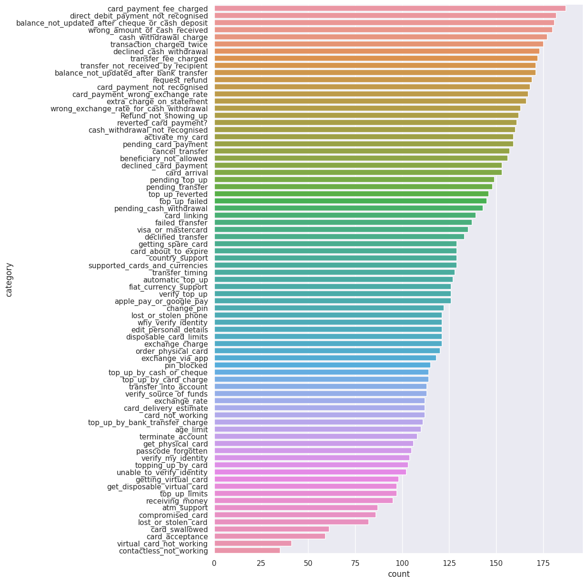
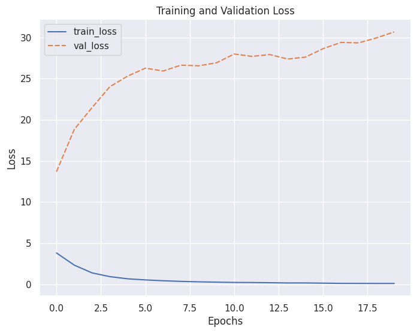

<!DOCTYPE html>


<html lang="en" data-content_root="./" >

  <head>
    <meta charset="utf-8" />
    <meta name="viewport" content="width=device-width, initial-scale=1.0" /><meta name="viewport" content="width=device-width, initial-scale=1" />

    <title>Load the Datasets &#8212; My Jupyter Book</title>
  
  
  
  <script data-cfasync="false">
    document.documentElement.dataset.mode = localStorage.getItem("mode") || "";
    document.documentElement.dataset.theme = localStorage.getItem("theme") || "";
  </script>
  
  <!-- Loaded before other Sphinx assets -->
  <link href="_static/styles/theme.css?digest=dfe6caa3a7d634c4db9b" rel="stylesheet" />
<link href="_static/styles/bootstrap.css?digest=dfe6caa3a7d634c4db9b" rel="stylesheet" />
<link href="_static/styles/pydata-sphinx-theme.css?digest=dfe6caa3a7d634c4db9b" rel="stylesheet" />

  
  <link href="_static/vendor/fontawesome/6.5.2/css/all.min.css?digest=dfe6caa3a7d634c4db9b" rel="stylesheet" />
  <link rel="preload" as="font" type="font/woff2" crossorigin href="_static/vendor/fontawesome/6.5.2/webfonts/fa-solid-900.woff2" />
<link rel="preload" as="font" type="font/woff2" crossorigin href="_static/vendor/fontawesome/6.5.2/webfonts/fa-brands-400.woff2" />
<link rel="preload" as="font" type="font/woff2" crossorigin href="_static/vendor/fontawesome/6.5.2/webfonts/fa-regular-400.woff2" />

    <link rel="stylesheet" type="text/css" href="_static/pygments.css?v=fa44fd50" />
    <link rel="stylesheet" type="text/css" href="_static/styles/sphinx-book-theme.css?v=a3416100" />
    <link rel="stylesheet" type="text/css" href="_static/togglebutton.css?v=13237357" />
    <link rel="stylesheet" type="text/css" href="_static/copybutton.css?v=76b2166b" />
    <link rel="stylesheet" type="text/css" href="_static/mystnb.4510f1fc1dee50b3e5859aac5469c37c29e427902b24a333a5f9fcb2f0b3ac41.css" />
    <link rel="stylesheet" type="text/css" href="_static/sphinx-thebe.css?v=4fa983c6" />
    <link rel="stylesheet" type="text/css" href="_static/sphinx-design.min.css?v=95c83b7e" />
  
  <!-- Pre-loaded scripts that we'll load fully later -->
  <link rel="preload" as="script" href="_static/scripts/bootstrap.js?digest=dfe6caa3a7d634c4db9b" />
<link rel="preload" as="script" href="_static/scripts/pydata-sphinx-theme.js?digest=dfe6caa3a7d634c4db9b" />
  <script src="_static/vendor/fontawesome/6.5.2/js/all.min.js?digest=dfe6caa3a7d634c4db9b"></script>

    <script src="_static/documentation_options.js?v=9eb32ce0"></script>
    <script src="_static/doctools.js?v=9a2dae69"></script>
    <script src="_static/sphinx_highlight.js?v=dc90522c"></script>
    <script src="_static/clipboard.min.js?v=a7894cd8"></script>
    <script src="_static/copybutton.js?v=f281be69"></script>
    <script src="_static/scripts/sphinx-book-theme.js?v=887ef09a"></script>
    <script>let toggleHintShow = 'Click to show';</script>
    <script>let toggleHintHide = 'Click to hide';</script>
    <script>let toggleOpenOnPrint = 'true';</script>
    <script src="_static/togglebutton.js?v=4a39c7ea"></script>
    <script>var togglebuttonSelector = '.toggle, .admonition.dropdown';</script>
    <script src="_static/design-tabs.js?v=f930bc37"></script>
    <script>const THEBE_JS_URL = "https://unpkg.com/thebe@0.8.2/lib/index.js"; const thebe_selector = ".thebe,.cell"; const thebe_selector_input = "pre"; const thebe_selector_output = ".output, .cell_output"</script>
    <script async="async" src="_static/sphinx-thebe.js?v=c100c467"></script>
    <script>var togglebuttonSelector = '.toggle, .admonition.dropdown';</script>
    <script>const THEBE_JS_URL = "https://unpkg.com/thebe@0.8.2/lib/index.js"; const thebe_selector = ".thebe,.cell"; const thebe_selector_input = "pre"; const thebe_selector_output = ".output, .cell_output"</script>
    <script>DOCUMENTATION_OPTIONS.pagename = 'intent-classification';</script>
    <link rel="index" title="Index" href="genindex.html" />
    <link rel="search" title="Search" href="search.html" />
  <meta name="viewport" content="width=device-width, initial-scale=1"/>
  <meta name="docsearch:language" content="en"/>
  </head>
  
  
  <body data-bs-spy="scroll" data-bs-target=".bd-toc-nav" data-offset="180" data-bs-root-margin="0px 0px -60%" data-default-mode="">

  
  
  <div id="pst-skip-link" class="skip-link d-print-none"><a href="#main-content">Skip to main content</a></div>
  
  <div id="pst-scroll-pixel-helper"></div>
  
  <button type="button" class="btn rounded-pill" id="pst-back-to-top">
    <i class="fa-solid fa-arrow-up"></i>Back to top</button>

  
  <input type="checkbox"
          class="sidebar-toggle"
          id="pst-primary-sidebar-checkbox"/>
  <label class="overlay overlay-primary" for="pst-primary-sidebar-checkbox"></label>
  
  <input type="checkbox"
          class="sidebar-toggle"
          id="pst-secondary-sidebar-checkbox"/>
  <label class="overlay overlay-secondary" for="pst-secondary-sidebar-checkbox"></label>
  
  <div class="search-button__wrapper">
    <div class="search-button__overlay"></div>
    <div class="search-button__search-container">
<form class="bd-search d-flex align-items-center"
      action="search.html"
      method="get">
  <i class="fa-solid fa-magnifying-glass"></i>
  <input type="search"
         class="form-control"
         name="q"
         id="search-input"
         placeholder="Search this book..."
         aria-label="Search this book..."
         autocomplete="off"
         autocorrect="off"
         autocapitalize="off"
         spellcheck="false"/>
  <span class="search-button__kbd-shortcut"><kbd class="kbd-shortcut__modifier">Ctrl</kbd>+<kbd>K</kbd></span>
</form></div>
  </div>

  <div class="pst-async-banner-revealer d-none">
  <aside id="bd-header-version-warning" class="d-none d-print-none" aria-label="Version warning"></aside>
</div>

  
    <header class="bd-header navbar navbar-expand-lg bd-navbar d-print-none">
    </header>
  

  <div class="bd-container">
    <div class="bd-container__inner bd-page-width">
      
      
      
        
      
      <div class="bd-sidebar-primary bd-sidebar">
        

  
  <div class="sidebar-header-items sidebar-primary__section">
    
    
    
    
  </div>
  
    <div class="sidebar-primary-items__start sidebar-primary__section">
        <div class="sidebar-primary-item">

  
    
  

<a class="navbar-brand logo" href="#">
  
  
  
  
  
  
    <p class="title logo__title">My Jupyter Book</p>
  
</a></div>
        <div class="sidebar-primary-item">

 <script>
 document.write(`
   <button class="btn search-button-field search-button__button" title="Search" aria-label="Search" data-bs-placement="bottom" data-bs-toggle="tooltip">
    <i class="fa-solid fa-magnifying-glass"></i>
    <span class="search-button__default-text">Search</span>
    <span class="search-button__kbd-shortcut"><kbd class="kbd-shortcut__modifier">Ctrl</kbd>+<kbd class="kbd-shortcut__modifier">K</kbd></span>
   </button>
 `);
 </script></div>
        <div class="sidebar-primary-item"><nav class="bd-links bd-docs-nav" aria-label="Main">
    <div class="bd-toc-item navbar-nav active">
        
        <ul class="nav bd-sidenav bd-sidenav__home-link">
            <li class="toctree-l1 current active">
                <a class="reference internal" href="#">
                    Load the Datasets
                </a>
            </li>
        </ul>
        
    </div>
</nav></div>
    </div>
  
  
  <div class="sidebar-primary-items__end sidebar-primary__section">
  </div>
  
  <div id="rtd-footer-container"></div>


      </div>
      
      <main id="main-content" class="bd-main" role="main">
        
        

<div class="sbt-scroll-pixel-helper"></div>

          <div class="bd-content">
            <div class="bd-article-container">
              
              <div class="bd-header-article d-print-none">
<div class="header-article-items header-article__inner">
  
    <div class="header-article-items__start">
      
        <div class="header-article-item"><button class="sidebar-toggle primary-toggle btn btn-sm" title="Toggle primary sidebar" data-bs-placement="bottom" data-bs-toggle="tooltip">
  <span class="fa-solid fa-bars"></span>
</button></div>
      
    </div>
  
  
    <div class="header-article-items__end">
      
        <div class="header-article-item">

<div class="article-header-buttons">


<div class="dropdown dropdown-download-buttons">
  <button class="btn dropdown-toggle" type="button" data-bs-toggle="dropdown" aria-expanded="false" aria-label="Download this page">
    <i class="fas fa-download"></i>
  </button>
  <ul class="dropdown-menu">
      
      
      
      <li><a href="_sources/intent-classification.ipynb" target="_blank"
   class="btn btn-sm btn-download-source-button dropdown-item"
   title="Download source file"
   data-bs-placement="left" data-bs-toggle="tooltip"
>
  

<span class="btn__icon-container">
  <i class="fas fa-file"></i>
  </span>
<span class="btn__text-container">.ipynb</span>
</a>
</li>
      
      
      
      
      <li>
<button onclick="window.print()"
  class="btn btn-sm btn-download-pdf-button dropdown-item"
  title="Print to PDF"
  data-bs-placement="left" data-bs-toggle="tooltip"
>
  

<span class="btn__icon-container">
  <i class="fas fa-file-pdf"></i>
  </span>
<span class="btn__text-container">.pdf</span>
</button>
</li>
      
  </ul>
</div>


<button onclick="toggleFullScreen()"
  class="btn btn-sm btn-fullscreen-button"
  title="Fullscreen mode"
  data-bs-placement="bottom" data-bs-toggle="tooltip"
>
  

<span class="btn__icon-container">
  <i class="fas fa-expand"></i>
  </span>

</button>


<script>
document.write(`
  <button class="btn btn-sm nav-link pst-navbar-icon theme-switch-button" title="light/dark" aria-label="light/dark" data-bs-placement="bottom" data-bs-toggle="tooltip">
    <i class="theme-switch fa-solid fa-sun fa-lg" data-mode="light"></i>
    <i class="theme-switch fa-solid fa-moon fa-lg" data-mode="dark"></i>
    <i class="theme-switch fa-solid fa-circle-half-stroke fa-lg" data-mode="auto"></i>
  </button>
`);
</script>


<script>
document.write(`
  <button class="btn btn-sm pst-navbar-icon search-button search-button__button" title="Search" aria-label="Search" data-bs-placement="bottom" data-bs-toggle="tooltip">
    <i class="fa-solid fa-magnifying-glass fa-lg"></i>
  </button>
`);
</script>
<button class="sidebar-toggle secondary-toggle btn btn-sm" title="Toggle secondary sidebar" data-bs-placement="bottom" data-bs-toggle="tooltip">
    <span class="fa-solid fa-list"></span>
</button>
</div></div>
      
    </div>
  
</div>
</div>
              
              

<div id="jb-print-docs-body" class="onlyprint">
    <h1>Load the Datasets</h1>
    <!-- Table of contents -->
    <div id="print-main-content">
        <div id="jb-print-toc">
            
            <div>
                <h2> Contents </h2>
            </div>
            <nav aria-label="Page">
                <ul class="visible nav section-nav flex-column">
<li class="toc-h1 nav-item toc-entry"><a class="reference internal nav-link" href="#">Load the Datasets</a></li>
<li class="toc-h1 nav-item toc-entry"><a class="reference internal nav-link" href="#check-the-missing-values">Check the Missing Values</a></li>
<li class="toc-h1 nav-item toc-entry"><a class="reference internal nav-link" href="#check-the-target-balance">Check the Target Balance</a></li>
<li class="toc-h1 nav-item toc-entry"><a class="reference internal nav-link" href="#display-the-distribution-of-labeled-intents">Display the Distribution of Labeled Intents</a></li>
<li class="toc-h1 nav-item toc-entry"><a class="reference internal nav-link" href="#shuffle-the-dataset">Shuffle the Dataset</a></li>
<li class="toc-h1 nav-item toc-entry"><a class="reference internal nav-link" href="#transform-the-data">Transform the Data</a></li>
<li class="toc-h1 nav-item toc-entry"><a class="reference internal nav-link" href="#tokenize-the-words">Tokenize the Words</a></li>
<li class="toc-h1 nav-item toc-entry"><a class="reference internal nav-link" href="#pad-the-training-and-test-sequences">Pad the Training and Test Sequences</a></li>
<li class="toc-h1 nav-item toc-entry"><a class="reference internal nav-link" href="#encode-the-labels">Encode the Labels</a></li>
<li class="toc-h1 nav-item toc-entry"><a class="reference internal nav-link" href="#prepare-a-validation-set">Prepare a Validation Set</a></li>
<li class="toc-h1 nav-item toc-entry"><a class="reference internal nav-link" href="#define-a-neural-network-architecture">Define a Neural Network Architecture</a></li>
<li class="toc-h1 nav-item toc-entry"><a class="reference internal nav-link" href="#fit-the-model">Fit the Model</a></li>
<li class="toc-h1 nav-item toc-entry"><a class="reference internal nav-link" href="#plot-training-and-validation-loss-curves">Plot Training and Validation Loss Curves</a></li>
<li class="toc-h1 nav-item toc-entry"><a class="reference internal nav-link" href="#retrain-the-model">Retrain the Model</a></li>
<li class="toc-h1 nav-item toc-entry"><a class="reference internal nav-link" href="#examine-the-models-performance-with-the-test-dataset">Examine the Model’s Performance with the Test Dataset</a></li>
<li class="toc-h1 nav-item toc-entry"><a class="reference internal nav-link" href="#predict-the-outcomes-for-new-data">Predict the Outcomes for New Data</a></li>
<li class="toc-h1 nav-item toc-entry"><a class="reference internal nav-link" href="#match-predictions-with-severity-levels">Match Predictions with Severity Levels</a></li>
</ul>

            </nav>
        </div>
    </div>
</div>

              
                
<div id="searchbox"></div>
                <article class="bd-article">
                  
  <p>Customer Intent Classification with Tensorflow</p>
<div class="cell docutils container">
<div class="cell_input docutils container">
<div class="highlight-ipython3 notranslate"><div class="highlight"><pre><span></span><span class="kn">import</span> <span class="nn">pandas</span> <span class="k">as</span> <span class="nn">pd</span>
<span class="kn">import</span> <span class="nn">numpy</span> <span class="k">as</span> <span class="nn">np</span>
<span class="kn">import</span> <span class="nn">matplotlib.pyplot</span> <span class="k">as</span> <span class="nn">plt</span>
<span class="kn">import</span> <span class="nn">seaborn</span> <span class="k">as</span> <span class="nn">sns</span>
<span class="kn">import</span> <span class="nn">tensorflow</span> <span class="k">as</span> <span class="nn">tf</span>
</pre></div>
</div>
</div>
<div class="cell_output docutils container">
<div class="output traceback highlight-ipythontb notranslate"><div class="highlight"><pre><span></span><span class="gt">---------------------------------------------------------------------------</span>
<span class="ne">ModuleNotFoundError</span><span class="g g-Whitespace">                       </span>Traceback (most recent call last)
<span class="n">Cell</span> <span class="n">In</span><span class="p">[</span><span class="mi">1</span><span class="p">],</span> <span class="n">line</span> <span class="mi">1</span>
<span class="ne">----&gt; </span><span class="mi">1</span> <span class="kn">import</span> <span class="nn">pandas</span> <span class="k">as</span> <span class="nn">pd</span>
<span class="g g-Whitespace">      </span><span class="mi">2</span> <span class="kn">import</span> <span class="nn">numpy</span> <span class="k">as</span> <span class="nn">np</span>
<span class="g g-Whitespace">      </span><span class="mi">3</span> <span class="kn">import</span> <span class="nn">matplotlib.pyplot</span> <span class="k">as</span> <span class="nn">plt</span>

<span class="ne">ModuleNotFoundError</span>: No module named &#39;pandas&#39;
</pre></div>
</div>
</div>
</div>
<div class="cell docutils container">
<div class="cell_input docutils container">
<div class="highlight-ipython3 notranslate"><div class="highlight"><pre><span></span><span class="kn">from</span> <span class="nn">tensorflow.keras.preprocessing</span> <span class="kn">import</span> <span class="n">sequence</span>
<span class="kn">from</span> <span class="nn">tensorflow.keras.preprocessing.text</span> <span class="kn">import</span> <span class="n">Tokenizer</span>
<span class="kn">from</span> <span class="nn">tensorflow.keras.preprocessing.sequence</span> <span class="kn">import</span> <span class="n">pad_sequences</span>
</pre></div>
</div>
</div>
</div>
<section id="load-the-datasets">
<h1>Load the Datasets<a class="headerlink" href="#load-the-datasets" title="Link to this heading">#</a></h1>
<div class="cell docutils container">
<div class="cell_input docutils container">
<div class="highlight-ipython3 notranslate"><div class="highlight"><pre><span></span><span class="n">df_train</span> <span class="o">=</span> <span class="n">pd</span><span class="o">.</span><span class="n">read_csv</span><span class="p">(</span><span class="s2">&quot;./train.csv&quot;</span><span class="p">)</span>
<span class="n">df_test</span> <span class="o">=</span> <span class="n">pd</span><span class="o">.</span><span class="n">read_csv</span><span class="p">(</span><span class="s2">&quot;./test.csv&quot;</span><span class="p">)</span>
</pre></div>
</div>
</div>
</div>
<div class="cell docutils container">
<div class="cell_input docutils container">
<div class="highlight-ipython3 notranslate"><div class="highlight"><pre><span></span><span class="n">df_train</span><span class="o">.</span><span class="n">head</span><span class="p">()</span>
</pre></div>
</div>
</div>
<div class="cell_output docutils container">
<div class="output text_html"><div>
<style scoped>
    .dataframe tbody tr th:only-of-type {
        vertical-align: middle;
    }

    .dataframe tbody tr th {
        vertical-align: top;
    }

    .dataframe thead th {
        text-align: right;
    }
</style>
<table border="1" class="dataframe">
  <thead>
    <tr style="text-align: right;">
      <th></th>
      <th>text</th>
      <th>category</th>
    </tr>
  </thead>
  <tbody>
    <tr>
      <th>0</th>
      <td>I am still waiting on my card?</td>
      <td>card_arrival</td>
    </tr>
    <tr>
      <th>1</th>
      <td>What can I do if my card still hasn't arrived ...</td>
      <td>card_arrival</td>
    </tr>
    <tr>
      <th>2</th>
      <td>I have been waiting over a week. Is the card s...</td>
      <td>card_arrival</td>
    </tr>
    <tr>
      <th>3</th>
      <td>Can I track my card while it is in the process...</td>
      <td>card_arrival</td>
    </tr>
    <tr>
      <th>4</th>
      <td>How do I know if I will get my card, or if it ...</td>
      <td>card_arrival</td>
    </tr>
  </tbody>
</table>
</div></div></div>
</div>
<div class="cell docutils container">
<div class="cell_input docutils container">
<div class="highlight-ipython3 notranslate"><div class="highlight"><pre><span></span><span class="n">df_test</span><span class="o">.</span><span class="n">head</span><span class="p">()</span>
</pre></div>
</div>
</div>
<div class="cell_output docutils container">
<div class="output text_html"><div>
<style scoped>
    .dataframe tbody tr th:only-of-type {
        vertical-align: middle;
    }

    .dataframe tbody tr th {
        vertical-align: top;
    }

    .dataframe thead th {
        text-align: right;
    }
</style>
<table border="1" class="dataframe">
  <thead>
    <tr style="text-align: right;">
      <th></th>
      <th>text</th>
      <th>category</th>
    </tr>
  </thead>
  <tbody>
    <tr>
      <th>0</th>
      <td>How do I locate my card?</td>
      <td>card_arrival</td>
    </tr>
    <tr>
      <th>1</th>
      <td>I still have not received my new card, I order...</td>
      <td>card_arrival</td>
    </tr>
    <tr>
      <th>2</th>
      <td>I ordered a card but it has not arrived. Help ...</td>
      <td>card_arrival</td>
    </tr>
    <tr>
      <th>3</th>
      <td>Is there a way to know when my card will arrive?</td>
      <td>card_arrival</td>
    </tr>
    <tr>
      <th>4</th>
      <td>My card has not arrived yet.</td>
      <td>card_arrival</td>
    </tr>
  </tbody>
</table>
</div></div></div>
</div>
</section>
<section id="check-the-missing-values">
<h1>Check the Missing Values<a class="headerlink" href="#check-the-missing-values" title="Link to this heading">#</a></h1>
<div class="cell docutils container">
<div class="cell_input docutils container">
<div class="highlight-ipython3 notranslate"><div class="highlight"><pre><span></span><span class="n">df_train</span><span class="o">.</span><span class="n">isnull</span><span class="p">()</span><span class="o">.</span><span class="n">sum</span><span class="p">()</span>
</pre></div>
</div>
</div>
<div class="cell_output docutils container">
<div class="output text_plain highlight-myst-ansi notranslate"><div class="highlight"><pre><span></span>text        0
category    0
dtype: int64
</pre></div>
</div>
</div>
</div>
<div class="cell docutils container">
<div class="cell_input docutils container">
<div class="highlight-ipython3 notranslate"><div class="highlight"><pre><span></span><span class="n">df_test</span><span class="o">.</span><span class="n">isnull</span><span class="p">()</span><span class="o">.</span><span class="n">sum</span><span class="p">()</span>
</pre></div>
</div>
</div>
<div class="cell_output docutils container">
<div class="output text_plain highlight-myst-ansi notranslate"><div class="highlight"><pre><span></span>text        0
category    0
dtype: int64
</pre></div>
</div>
</div>
</div>
<div class="cell docutils container">
<div class="cell_input docutils container">
<div class="highlight-ipython3 notranslate"><div class="highlight"><pre><span></span><span class="n">df_train</span> <span class="o">=</span> <span class="n">df_train</span><span class="o">.</span><span class="n">dropna</span><span class="p">()</span>
<span class="n">df_test</span> <span class="o">=</span> <span class="n">df_test</span><span class="o">.</span><span class="n">dropna</span><span class="p">()</span>
</pre></div>
</div>
</div>
</div>
</section>
<section id="check-the-target-balance">
<h1>Check the Target Balance<a class="headerlink" href="#check-the-target-balance" title="Link to this heading">#</a></h1>
<div class="cell docutils container">
<div class="cell_input docutils container">
<div class="highlight-ipython3 notranslate"><div class="highlight"><pre><span></span><span class="n">unique_values</span> <span class="o">=</span> <span class="n">df_train</span><span class="p">[</span><span class="s2">&quot;category&quot;</span><span class="p">]</span><span class="o">.</span><span class="n">unique</span><span class="p">()</span>
<span class="n">value_counts</span> <span class="o">=</span> <span class="n">df_train</span><span class="p">[</span><span class="s2">&quot;category&quot;</span><span class="p">]</span><span class="o">.</span><span class="n">value_counts</span><span class="p">()</span>
<span class="nb">print</span><span class="p">(</span><span class="n">unique_values</span><span class="p">)</span>
<span class="nb">print</span><span class="p">(</span><span class="n">value_counts</span><span class="p">)</span>
</pre></div>
</div>
</div>
<div class="cell_output docutils container">
<div class="output stream highlight-myst-ansi notranslate"><div class="highlight"><pre><span></span>[&#39;card_arrival&#39; &#39;card_linking&#39; &#39;exchange_rate&#39;
 &#39;card_payment_wrong_exchange_rate&#39; &#39;extra_charge_on_statement&#39;
 &#39;pending_cash_withdrawal&#39; &#39;fiat_currency_support&#39;
 &#39;card_delivery_estimate&#39; &#39;automatic_top_up&#39; &#39;card_not_working&#39;
 &#39;exchange_via_app&#39; &#39;lost_or_stolen_card&#39; &#39;age_limit&#39; &#39;pin_blocked&#39;
 &#39;contactless_not_working&#39; &#39;top_up_by_bank_transfer_charge&#39;
 &#39;pending_top_up&#39; &#39;cancel_transfer&#39; &#39;top_up_limits&#39;
 &#39;wrong_amount_of_cash_received&#39; &#39;card_payment_fee_charged&#39;
 &#39;transfer_not_received_by_recipient&#39; &#39;supported_cards_and_currencies&#39;
 &#39;getting_virtual_card&#39; &#39;card_acceptance&#39; &#39;top_up_reverted&#39;
 &#39;balance_not_updated_after_cheque_or_cash_deposit&#39;
 &#39;card_payment_not_recognised&#39; &#39;edit_personal_details&#39;
 &#39;why_verify_identity&#39; &#39;unable_to_verify_identity&#39; &#39;get_physical_card&#39;
 &#39;visa_or_mastercard&#39; &#39;topping_up_by_card&#39; &#39;disposable_card_limits&#39;
 &#39;compromised_card&#39; &#39;atm_support&#39; &#39;direct_debit_payment_not_recognised&#39;
 &#39;passcode_forgotten&#39; &#39;declined_cash_withdrawal&#39; &#39;pending_card_payment&#39;
 &#39;lost_or_stolen_phone&#39; &#39;request_refund&#39; &#39;declined_transfer&#39;
 &#39;Refund_not_showing_up&#39; &#39;declined_card_payment&#39; &#39;pending_transfer&#39;
 &#39;terminate_account&#39; &#39;card_swallowed&#39; &#39;transaction_charged_twice&#39;
 &#39;verify_source_of_funds&#39; &#39;transfer_timing&#39; &#39;reverted_card_payment?&#39;
 &#39;change_pin&#39; &#39;beneficiary_not_allowed&#39; &#39;transfer_fee_charged&#39;
 &#39;receiving_money&#39; &#39;failed_transfer&#39; &#39;transfer_into_account&#39;
 &#39;verify_top_up&#39; &#39;getting_spare_card&#39; &#39;top_up_by_cash_or_cheque&#39;
 &#39;order_physical_card&#39; &#39;virtual_card_not_working&#39;
 &#39;wrong_exchange_rate_for_cash_withdrawal&#39; &#39;get_disposable_virtual_card&#39;
 &#39;top_up_failed&#39; &#39;balance_not_updated_after_bank_transfer&#39;
 &#39;cash_withdrawal_not_recognised&#39; &#39;exchange_charge&#39;
 &#39;top_up_by_card_charge&#39; &#39;activate_my_card&#39; &#39;cash_withdrawal_charge&#39;
 &#39;card_about_to_expire&#39; &#39;apple_pay_or_google_pay&#39; &#39;verify_my_identity&#39;
 &#39;country_support&#39;]
category
card_payment_fee_charged                            187
direct_debit_payment_not_recognised                 182
balance_not_updated_after_cheque_or_cash_deposit    181
wrong_amount_of_cash_received                       180
cash_withdrawal_charge                              177
                                                   ... 
lost_or_stolen_card                                  82
card_swallowed                                       61
card_acceptance                                      59
virtual_card_not_working                             41
contactless_not_working                              35
Name: count, Length: 77, dtype: int64
</pre></div>
</div>
</div>
</div>
</section>
<section id="display-the-distribution-of-labeled-intents">
<h1>Display the Distribution of Labeled Intents<a class="headerlink" href="#display-the-distribution-of-labeled-intents" title="Link to this heading">#</a></h1>
<div class="cell docutils container">
<div class="cell_input docutils container">
<div class="highlight-ipython3 notranslate"><div class="highlight"><pre><span></span><span class="n">sns</span><span class="o">.</span><span class="n">set</span><span class="p">(</span><span class="n">rc</span><span class="o">=</span><span class="p">{</span><span class="s2">&quot;figure.figsize&quot;</span><span class="p">:(</span><span class="mi">10</span><span class="p">,</span> <span class="mi">15</span><span class="p">)})</span>
<span class="n">sns</span><span class="o">.</span><span class="n">countplot</span><span class="p">(</span><span class="n">data</span><span class="o">=</span><span class="n">df_train</span><span class="p">,</span> <span class="n">y</span><span class="o">=</span><span class="s2">&quot;category&quot;</span><span class="p">,</span> <span class="n">order</span><span class="o">=</span><span class="n">df_train</span><span class="p">[</span><span class="s1">&#39;category&#39;</span><span class="p">]</span><span class="o">.</span><span class="n">value_counts</span><span class="p">()</span><span class="o">.</span><span class="n">index</span><span class="p">)</span>
<span class="n">plt</span><span class="o">.</span><span class="n">show</span><span class="p">()</span>
</pre></div>
</div>
</div>
<div class="cell_output docutils container">

</div>
</div>
</section>
<section id="shuffle-the-dataset">
<h1>Shuffle the Dataset<a class="headerlink" href="#shuffle-the-dataset" title="Link to this heading">#</a></h1>
<div class="cell docutils container">
<div class="cell_input docutils container">
<div class="highlight-ipython3 notranslate"><div class="highlight"><pre><span></span><span class="n">df_train</span> <span class="o">=</span> <span class="n">df_train</span><span class="o">.</span><span class="n">sample</span><span class="p">(</span><span class="n">frac</span> <span class="o">=</span> <span class="mi">1</span><span class="p">)</span>
</pre></div>
</div>
</div>
</div>
</section>
<section id="transform-the-data">
<h1>Transform the Data<a class="headerlink" href="#transform-the-data" title="Link to this heading">#</a></h1>
<div class="cell docutils container">
<div class="cell_input docutils container">
<div class="highlight-ipython3 notranslate"><div class="highlight"><pre><span></span><span class="n">train_data</span> <span class="o">=</span> <span class="n">df_train</span><span class="p">[</span><span class="s1">&#39;text&#39;</span><span class="p">]</span><span class="o">.</span><span class="n">to_numpy</span><span class="p">()</span>
<span class="n">test_data</span> <span class="o">=</span> <span class="n">df_test</span><span class="p">[</span><span class="s1">&#39;text&#39;</span><span class="p">]</span><span class="o">.</span><span class="n">to_numpy</span><span class="p">()</span>
</pre></div>
</div>
</div>
</div>
</section>
<section id="tokenize-the-words">
<h1>Tokenize the Words<a class="headerlink" href="#tokenize-the-words" title="Link to this heading">#</a></h1>
<div class="cell docutils container">
<div class="cell_input docutils container">
<div class="highlight-ipython3 notranslate"><div class="highlight"><pre><span></span><span class="n">vocab_size</span> <span class="o">=</span> <span class="mi">5000</span>
<span class="n">oov_tok</span> <span class="o">=</span> <span class="s1">&#39;&lt;OOV&gt;&#39;</span>
</pre></div>
</div>
</div>
</div>
<div class="cell docutils container">
<div class="cell_input docutils container">
<div class="highlight-ipython3 notranslate"><div class="highlight"><pre><span></span><span class="n">tokenizer</span> <span class="o">=</span> <span class="n">Tokenizer</span><span class="p">(</span><span class="n">num_words</span> <span class="o">=</span> <span class="n">vocab_size</span><span class="p">,</span> <span class="n">oov_token</span><span class="o">=</span><span class="n">oov_tok</span><span class="p">)</span>
<span class="n">tokenizer</span><span class="o">.</span><span class="n">fit_on_texts</span><span class="p">(</span><span class="n">train_data</span><span class="p">)</span>
</pre></div>
</div>
</div>
</div>
<div class="cell docutils container">
<div class="cell_input docutils container">
<div class="highlight-ipython3 notranslate"><div class="highlight"><pre><span></span><span class="n">train_sequences</span> <span class="o">=</span> <span class="n">tokenizer</span><span class="o">.</span><span class="n">texts_to_sequences</span><span class="p">(</span><span class="n">train_data</span><span class="p">)</span>
<span class="n">test_sequences</span> <span class="o">=</span> <span class="n">tokenizer</span><span class="o">.</span><span class="n">texts_to_sequences</span><span class="p">(</span><span class="n">test_data</span><span class="p">)</span>
</pre></div>
</div>
</div>
</div>
</section>
<section id="pad-the-training-and-test-sequences">
<h1>Pad the Training and Test Sequences<a class="headerlink" href="#pad-the-training-and-test-sequences" title="Link to this heading">#</a></h1>
<div class="cell docutils container">
<div class="cell_input docutils container">
<div class="highlight-ipython3 notranslate"><div class="highlight"><pre><span></span><span class="n">max_length</span> <span class="o">=</span> <span class="mi">50</span>
<span class="n">trunc_type</span> <span class="o">=</span> <span class="s1">&#39;post&#39;</span>
<span class="n">padding_type</span> <span class="o">=</span> <span class="s1">&#39;post&#39;</span>
</pre></div>
</div>
</div>
</div>
<div class="cell docutils container">
<div class="cell_input docutils container">
<div class="highlight-ipython3 notranslate"><div class="highlight"><pre><span></span><span class="n">x_train</span> <span class="o">=</span> <span class="n">pad_sequences</span><span class="p">(</span><span class="n">train_sequences</span><span class="p">,</span> <span class="n">maxlen</span><span class="o">=</span><span class="n">max_length</span><span class="p">,</span> <span class="n">padding</span><span class="o">=</span><span class="n">padding_type</span><span class="p">,</span> <span class="n">truncating</span><span class="o">=</span><span class="n">trunc_type</span><span class="p">)</span>

<span class="n">x_test</span> <span class="o">=</span> <span class="n">pad_sequences</span><span class="p">(</span><span class="n">test_sequences</span><span class="p">,</span> <span class="n">maxlen</span><span class="o">=</span><span class="n">max_length</span><span class="p">,</span> <span class="n">padding</span><span class="o">=</span><span class="n">padding_type</span><span class="p">,</span> <span class="n">truncating</span><span class="o">=</span><span class="n">trunc_type</span><span class="p">)</span>
</pre></div>
</div>
</div>
</div>
</section>
<section id="encode-the-labels">
<h1>Encode the Labels<a class="headerlink" href="#encode-the-labels" title="Link to this heading">#</a></h1>
<div class="cell docutils container">
<div class="cell_input docutils container">
<div class="highlight-ipython3 notranslate"><div class="highlight"><pre><span></span><span class="n">train_labels</span> <span class="o">=</span> <span class="n">pd</span><span class="o">.</span><span class="n">Categorical</span><span class="p">(</span><span class="n">df_train</span><span class="p">[</span><span class="s1">&#39;category&#39;</span><span class="p">])</span><span class="o">.</span><span class="n">codes</span>
<span class="n">test_labels</span> <span class="o">=</span> <span class="n">pd</span><span class="o">.</span><span class="n">Categorical</span><span class="p">(</span><span class="n">df_test</span><span class="p">[</span><span class="s1">&#39;category&#39;</span><span class="p">])</span><span class="o">.</span><span class="n">codes</span>
</pre></div>
</div>
</div>
</div>
<div class="cell docutils container">
<div class="cell_input docutils container">
<div class="highlight-ipython3 notranslate"><div class="highlight"><pre><span></span><span class="n">y_train</span> <span class="o">=</span> <span class="n">train_labels</span><span class="o">.</span><span class="n">reshape</span><span class="p">((</span><span class="mi">10003</span><span class="p">,</span><span class="mi">1</span><span class="p">))</span>
<span class="n">y_test</span> <span class="o">=</span> <span class="n">test_labels</span><span class="o">.</span><span class="n">reshape</span><span class="p">((</span><span class="mi">3080</span><span class="p">,</span><span class="mi">1</span><span class="p">))</span>
</pre></div>
</div>
</div>
</div>
</section>
<section id="prepare-a-validation-set">
<h1>Prepare a Validation Set<a class="headerlink" href="#prepare-a-validation-set" title="Link to this heading">#</a></h1>
<div class="cell docutils container">
<div class="cell_input docutils container">
<div class="highlight-ipython3 notranslate"><div class="highlight"><pre><span></span><span class="n">partial_x_train</span> <span class="o">=</span> <span class="n">x_train</span><span class="p">[:</span><span class="mi">9000</span><span class="p">]</span>
<span class="n">partial_y_train</span> <span class="o">=</span> <span class="n">y_train</span><span class="p">[:</span><span class="mi">9000</span><span class="p">]</span>

<span class="n">x_val</span> <span class="o">=</span> <span class="n">x_train</span><span class="p">[</span><span class="mi">9000</span><span class="p">:]</span>
<span class="n">y_val</span> <span class="o">=</span> <span class="n">y_train</span><span class="p">[</span><span class="mi">9000</span><span class="p">:]</span>
</pre></div>
</div>
</div>
</div>
</section>
<section id="define-a-neural-network-architecture">
<h1>Define a Neural Network Architecture<a class="headerlink" href="#define-a-neural-network-architecture" title="Link to this heading">#</a></h1>
<div class="cell docutils container">
<div class="cell_input docutils container">
<div class="highlight-ipython3 notranslate"><div class="highlight"><pre><span></span><span class="n">embedding_dim</span> <span class="o">=</span> <span class="mi">64</span>

<span class="n">model</span> <span class="o">=</span> <span class="n">tf</span><span class="o">.</span><span class="n">keras</span><span class="o">.</span><span class="n">Sequential</span><span class="p">([</span>
    <span class="n">tf</span><span class="o">.</span><span class="n">keras</span><span class="o">.</span><span class="n">layers</span><span class="o">.</span><span class="n">Embedding</span><span class="p">(</span><span class="n">vocab_size</span><span class="p">,</span> <span class="n">embedding_dim</span><span class="p">),</span>
    <span class="n">tf</span><span class="o">.</span><span class="n">keras</span><span class="o">.</span><span class="n">layers</span><span class="o">.</span><span class="n">Bidirectional</span><span class="p">(</span><span class="n">tf</span><span class="o">.</span><span class="n">keras</span><span class="o">.</span><span class="n">layers</span><span class="o">.</span><span class="n">LSTM</span><span class="p">(</span><span class="n">embedding_dim</span><span class="p">)),</span>
    <span class="n">tf</span><span class="o">.</span><span class="n">keras</span><span class="o">.</span><span class="n">layers</span><span class="o">.</span><span class="n">Dense</span><span class="p">(</span><span class="n">embedding_dim</span><span class="p">,</span> <span class="n">activation</span><span class="o">=</span><span class="s1">&#39;relu&#39;</span><span class="p">),</span>
    <span class="n">tf</span><span class="o">.</span><span class="n">keras</span><span class="o">.</span><span class="n">layers</span><span class="o">.</span><span class="n">Dense</span><span class="p">(</span><span class="mi">77</span><span class="p">,</span> <span class="n">activation</span><span class="o">=</span><span class="s1">&#39;softmax&#39;</span><span class="p">)</span>
<span class="p">])</span>

<span class="n">model</span><span class="o">.</span><span class="n">summary</span><span class="p">()</span>
</pre></div>
</div>
</div>
<div class="cell_output docutils container">
<div class="output stream highlight-myst-ansi notranslate"><div class="highlight"><pre><span></span>Model: &quot;sequential_2&quot;
_________________________________________________________________
 Layer (type)                Output Shape              Param #   
=================================================================
 embedding_2 (Embedding)     (None, None, 64)          320000    
                                                                 
 bidirectional_2 (Bidirecti  (None, 128)               66048     
 onal)                                                           
                                                                 
 dense_4 (Dense)             (None, 64)                8256      
                                                                 
 dense_5 (Dense)             (None, 77)                5005      
                                                                 
=================================================================
Total params: 399309 (1.52 MB)
Trainable params: 399309 (1.52 MB)
Non-trainable params: 0 (0.00 Byte)
_________________________________________________________________
</pre></div>
</div>
</div>
</div>
</section>
<section id="fit-the-model">
<h1>Fit the Model<a class="headerlink" href="#fit-the-model" title="Link to this heading">#</a></h1>
<div class="cell docutils container">
<div class="cell_input docutils container">
<div class="highlight-ipython3 notranslate"><div class="highlight"><pre><span></span><span class="n">model</span><span class="o">.</span><span class="n">compile</span><span class="p">(</span><span class="n">loss</span><span class="o">=</span><span class="s1">&#39;sparse_categorical_crossentropy&#39;</span><span class="p">,</span> <span class="n">optimizer</span><span class="o">=</span><span class="s1">&#39;adam&#39;</span><span class="p">,</span> <span class="n">metrics</span><span class="o">=</span><span class="p">[</span><span class="s1">&#39;accuracy&#39;</span><span class="p">])</span>
</pre></div>
</div>
</div>
</div>
<div class="cell docutils container">
<div class="cell_input docutils container">
<div class="highlight-ipython3 notranslate"><div class="highlight"><pre><span></span><span class="n">num_epochs</span> <span class="o">=</span> <span class="mi">20</span>

<span class="n">history</span> <span class="o">=</span> <span class="n">model</span><span class="o">.</span><span class="n">fit</span><span class="p">(</span><span class="n">partial_x_train</span><span class="p">,</span> <span class="n">partial_y_train</span><span class="p">,</span> <span class="n">epochs</span><span class="o">=</span><span class="n">num_epochs</span><span class="p">,</span> <span class="n">validation_data</span><span class="o">=</span><span class="p">(</span><span class="n">x_val</span><span class="p">,</span> <span class="n">y_val</span><span class="p">),</span> <span class="n">verbose</span><span class="o">=</span><span class="mi">2</span><span class="p">)</span>
</pre></div>
</div>
</div>
<div class="cell_output docutils container">
<div class="output stream highlight-myst-ansi notranslate"><div class="highlight"><pre><span></span>Epoch 1/20
282/282 - 19s - loss: 3.8078 - accuracy: 0.0644 - val_loss: 13.6971 - val_accuracy: 0.0000e+00 - 19s/epoch - 66ms/step
Epoch 2/20
282/282 - 13s - loss: 2.3287 - accuracy: 0.3296 - val_loss: 18.8184 - val_accuracy: 0.0050 - 13s/epoch - 47ms/step
Epoch 3/20
282/282 - 14s - loss: 1.3865 - accuracy: 0.5832 - val_loss: 21.4733 - val_accuracy: 0.0130 - 14s/epoch - 50ms/step
Epoch 4/20
282/282 - 13s - loss: 0.9316 - accuracy: 0.7269 - val_loss: 24.0095 - val_accuracy: 0.0269 - 13s/epoch - 48ms/step
Epoch 5/20
282/282 - 14s - loss: 0.6664 - accuracy: 0.8066 - val_loss: 25.2978 - val_accuracy: 0.0499 - 14s/epoch - 50ms/step
Epoch 6/20
282/282 - 13s - loss: 0.5329 - accuracy: 0.8516 - val_loss: 26.2684 - val_accuracy: 0.0518 - 13s/epoch - 48ms/step
Epoch 7/20
282/282 - 14s - loss: 0.4314 - accuracy: 0.8789 - val_loss: 25.9215 - val_accuracy: 0.0508 - 14s/epoch - 49ms/step
Epoch 8/20
282/282 - 14s - loss: 0.3540 - accuracy: 0.8999 - val_loss: 26.6298 - val_accuracy: 0.0578 - 14s/epoch - 48ms/step
Epoch 9/20
282/282 - 14s - loss: 0.2996 - accuracy: 0.9134 - val_loss: 26.5539 - val_accuracy: 0.0469 - 14s/epoch - 48ms/step
Epoch 10/20
282/282 - 14s - loss: 0.2600 - accuracy: 0.9253 - val_loss: 26.9175 - val_accuracy: 0.0518 - 14s/epoch - 48ms/step
Epoch 11/20
282/282 - 14s - loss: 0.2262 - accuracy: 0.9347 - val_loss: 27.9854 - val_accuracy: 0.0538 - 14s/epoch - 50ms/step
Epoch 12/20
282/282 - 13s - loss: 0.2142 - accuracy: 0.9401 - val_loss: 27.6999 - val_accuracy: 0.0469 - 13s/epoch - 48ms/step
Epoch 13/20
282/282 - 13s - loss: 0.1913 - accuracy: 0.9439 - val_loss: 27.9212 - val_accuracy: 0.0548 - 13s/epoch - 46ms/step
Epoch 14/20
282/282 - 14s - loss: 0.1633 - accuracy: 0.9544 - val_loss: 27.3768 - val_accuracy: 0.0499 - 14s/epoch - 51ms/step
Epoch 15/20
282/282 - 14s - loss: 0.1642 - accuracy: 0.9533 - val_loss: 27.6065 - val_accuracy: 0.0469 - 14s/epoch - 48ms/step
Epoch 16/20
282/282 - 14s - loss: 0.1383 - accuracy: 0.9573 - val_loss: 28.6368 - val_accuracy: 0.0528 - 14s/epoch - 50ms/step
Epoch 17/20
282/282 - 13s - loss: 0.1120 - accuracy: 0.9662 - val_loss: 29.3918 - val_accuracy: 0.0459 - 13s/epoch - 47ms/step
Epoch 18/20
282/282 - 14s - loss: 0.1075 - accuracy: 0.9689 - val_loss: 29.3409 - val_accuracy: 0.0499 - 14s/epoch - 51ms/step
Epoch 19/20
282/282 - 14s - loss: 0.1036 - accuracy: 0.9692 - val_loss: 29.9437 - val_accuracy: 0.0508 - 14s/epoch - 48ms/step
Epoch 20/20
282/282 - 14s - loss: 0.1039 - accuracy: 0.9687 - val_loss: 30.6747 - val_accuracy: 0.0459 - 14s/epoch - 50ms/step
</pre></div>
</div>
</div>
</div>
</section>
<section id="plot-training-and-validation-loss-curves">
<h1>Plot Training and Validation Loss Curves<a class="headerlink" href="#plot-training-and-validation-loss-curves" title="Link to this heading">#</a></h1>
<div class="cell docutils container">
<div class="cell_input docutils container">
<div class="highlight-ipython3 notranslate"><div class="highlight"><pre><span></span><span class="n">df_history</span> <span class="o">=</span> <span class="n">pd</span><span class="o">.</span><span class="n">DataFrame</span><span class="p">(</span><span class="n">history</span><span class="o">.</span><span class="n">history</span><span class="p">)</span>
<span class="n">df_history</span><span class="o">.</span><span class="n">rename</span><span class="p">(</span><span class="n">columns</span> <span class="o">=</span><span class="p">{</span><span class="s2">&quot;loss&quot;</span><span class="p">:</span> <span class="s2">&quot;train_loss&quot;</span><span class="p">},</span> <span class="n">inplace</span><span class="o">=</span><span class="kc">True</span><span class="p">)</span>
</pre></div>
</div>
</div>
</div>
<div class="cell docutils container">
<div class="cell_input docutils container">
<div class="highlight-ipython3 notranslate"><div class="highlight"><pre><span></span><span class="n">sns</span><span class="o">.</span><span class="n">set</span><span class="p">(</span><span class="n">rc</span><span class="o">=</span><span class="p">{</span><span class="s2">&quot;figure.figsize&quot;</span><span class="p">:(</span><span class="mi">8</span><span class="p">,</span> <span class="mi">6</span><span class="p">)})</span>
<span class="n">my_plot</span> <span class="o">=</span> <span class="n">sns</span><span class="o">.</span><span class="n">lineplot</span><span class="p">(</span><span class="n">data</span><span class="o">=</span><span class="n">df_history</span><span class="p">[[</span><span class="s2">&quot;train_loss&quot;</span><span class="p">,</span><span class="s2">&quot;val_loss&quot;</span><span class="p">]])</span>
<span class="n">my_plot</span><span class="o">.</span><span class="n">set_xlabel</span><span class="p">(</span><span class="s1">&#39;Epochs&#39;</span><span class="p">)</span>
<span class="n">my_plot</span><span class="o">.</span><span class="n">set_ylabel</span><span class="p">(</span><span class="s2">&quot;Loss&quot;</span><span class="p">)</span>
<span class="n">my_plot</span><span class="o">.</span><span class="n">set_title</span><span class="p">(</span><span class="s2">&quot;Training and Validation Loss&quot;</span><span class="p">)</span>
<span class="n">plt</span><span class="o">.</span><span class="n">show</span><span class="p">()</span>
</pre></div>
</div>
</div>
<div class="cell_output docutils container">

</div>
</div>
</section>
<section id="retrain-the-model">
<h1>Retrain the Model<a class="headerlink" href="#retrain-the-model" title="Link to this heading">#</a></h1>
<div class="cell docutils container">
<div class="cell_input docutils container">
<div class="highlight-ipython3 notranslate"><div class="highlight"><pre><span></span><span class="c1"># Epoch number may differ from your observation as the randomized training data.</span>
<span class="n">num_epochs</span> <span class="o">=</span> <span class="mi">14</span>  

<span class="n">model</span> <span class="o">=</span> <span class="n">tf</span><span class="o">.</span><span class="n">keras</span><span class="o">.</span><span class="n">Sequential</span><span class="p">([</span>
 <span class="n">tf</span><span class="o">.</span><span class="n">keras</span><span class="o">.</span><span class="n">layers</span><span class="o">.</span><span class="n">Embedding</span><span class="p">(</span><span class="n">vocab_size</span><span class="p">,</span> <span class="n">embedding_dim</span><span class="p">),</span>
 <span class="n">tf</span><span class="o">.</span><span class="n">keras</span><span class="o">.</span><span class="n">layers</span><span class="o">.</span><span class="n">Bidirectional</span><span class="p">(</span><span class="n">tf</span><span class="o">.</span><span class="n">keras</span><span class="o">.</span><span class="n">layers</span><span class="o">.</span><span class="n">LSTM</span><span class="p">(</span><span class="n">embedding_dim</span><span class="p">)),</span>
 <span class="n">tf</span><span class="o">.</span><span class="n">keras</span><span class="o">.</span><span class="n">layers</span><span class="o">.</span><span class="n">Dense</span><span class="p">(</span><span class="n">embedding_dim</span><span class="p">,</span> <span class="n">activation</span><span class="o">=</span><span class="s1">&#39;relu&#39;</span><span class="p">),</span>
 <span class="n">tf</span><span class="o">.</span><span class="n">keras</span><span class="o">.</span><span class="n">layers</span><span class="o">.</span><span class="n">Dense</span><span class="p">(</span><span class="mi">77</span><span class="p">,</span> <span class="n">activation</span><span class="o">=</span><span class="s1">&#39;softmax&#39;</span><span class="p">)</span>
<span class="p">])</span>

<span class="n">model</span><span class="o">.</span><span class="n">compile</span><span class="p">(</span><span class="n">loss</span><span class="o">=</span><span class="s1">&#39;sparse_categorical_crossentropy&#39;</span><span class="p">,</span> <span class="n">optimizer</span><span class="o">=</span><span class="s1">&#39;adam&#39;</span><span class="p">,</span> <span class="n">metrics</span><span class="o">=</span><span class="p">[</span><span class="s1">&#39;accuracy&#39;</span><span class="p">])</span>

<span class="n">model</span><span class="o">.</span><span class="n">fit</span><span class="p">(</span><span class="n">x_train</span><span class="p">,</span> <span class="n">y_train</span><span class="p">,</span> <span class="n">epochs</span><span class="o">=</span><span class="n">num_epochs</span><span class="p">,</span> <span class="n">verbose</span><span class="o">=</span><span class="mi">2</span><span class="p">)</span>
</pre></div>
</div>
</div>
<div class="cell_output docutils container">
<div class="output stream highlight-myst-ansi notranslate"><div class="highlight"><pre><span></span>Epoch 1/14
313/313 - 18s - loss: 3.6907 - accuracy: 0.1044 - 18s/epoch - 58ms/step
Epoch 2/14
313/313 - 15s - loss: 1.8382 - accuracy: 0.4876 - 15s/epoch - 47ms/step
Epoch 3/14
313/313 - 14s - loss: 1.0752 - accuracy: 0.6922 - 14s/epoch - 46ms/step
Epoch 4/14
313/313 - 15s - loss: 0.7375 - accuracy: 0.7906 - 15s/epoch - 48ms/step
Epoch 5/14
313/313 - 14s - loss: 0.5575 - accuracy: 0.8428 - 14s/epoch - 46ms/step
Epoch 6/14
313/313 - 15s - loss: 0.4434 - accuracy: 0.8727 - 15s/epoch - 48ms/step
Epoch 7/14
313/313 - 14s - loss: 0.3768 - accuracy: 0.8942 - 14s/epoch - 46ms/step
Epoch 8/14
313/313 - 15s - loss: 0.3163 - accuracy: 0.9096 - 15s/epoch - 48ms/step
Epoch 9/14
313/313 - 14s - loss: 0.2782 - accuracy: 0.9188 - 14s/epoch - 46ms/step
Epoch 10/14
313/313 - 15s - loss: 0.2422 - accuracy: 0.9304 - 15s/epoch - 48ms/step
Epoch 11/14
313/313 - 14s - loss: 0.2167 - accuracy: 0.9368 - 14s/epoch - 46ms/step
Epoch 12/14
313/313 - 15s - loss: 0.1916 - accuracy: 0.9445 - 15s/epoch - 49ms/step
Epoch 13/14
313/313 - 14s - loss: 0.1667 - accuracy: 0.9513 - 14s/epoch - 46ms/step
Epoch 14/14
313/313 - 15s - loss: 0.1559 - accuracy: 0.9519 - 15s/epoch - 47ms/step
</pre></div>
</div>
<div class="output text_plain highlight-myst-ansi notranslate"><div class="highlight"><pre><span></span>&lt;keras.src.callbacks.History at 0x7c9d1ee2a9d0&gt;
</pre></div>
</div>
</div>
</div>
</section>
<section id="examine-the-models-performance-with-the-test-dataset">
<h1>Examine the Model’s Performance with the Test Dataset<a class="headerlink" href="#examine-the-models-performance-with-the-test-dataset" title="Link to this heading">#</a></h1>
<div class="cell docutils container">
<div class="cell_input docutils container">
<div class="highlight-ipython3 notranslate"><div class="highlight"><pre><span></span><span class="n">results</span> <span class="o">=</span> <span class="n">model</span><span class="o">.</span><span class="n">evaluate</span><span class="p">(</span><span class="n">x_test</span><span class="p">,</span> <span class="n">y_test</span><span class="p">)</span>
</pre></div>
</div>
</div>
<div class="cell_output docutils container">
<div class="output stream highlight-myst-ansi notranslate"><div class="highlight"><pre><span></span> 1/97 [..............................] - ETA: 1:14 - loss: 0.7346 - accuracy: 0.8125
 6/97 [&gt;.............................] - ETA: 1s - loss: 0.3281 - accuracy: 0.9115  
11/97 [==&gt;...........................] - ETA: 1s - loss: 0.5894 - accuracy: 0.8693
16/97 [===&gt;..........................] - ETA: 0s - loss: 0.6259 - accuracy: 0.8594
21/97 [=====&gt;........................] - ETA: 0s - loss: 0.7698 - accuracy: 0.8304
26/97 [=======&gt;......................] - ETA: 0s - loss: 0.8016 - accuracy: 0.8245
31/97 [========&gt;.....................] - ETA: 0s - loss: 0.8781 - accuracy: 0.8175
36/97 [==========&gt;...................] - ETA: 0s - loss: 0.9537 - accuracy: 0.8030
41/97 [===========&gt;..................] - ETA: 0s - loss: 0.9214 - accuracy: 0.8018
46/97 [=============&gt;................] - ETA: 0s - loss: 0.9239 - accuracy: 0.8016
51/97 [==============&gt;...............] - ETA: 0s - loss: 0.9203 - accuracy: 0.8051
56/97 [================&gt;.............] - ETA: 0s - loss: 0.9151 - accuracy: 0.8075
61/97 [=================&gt;............] - ETA: 0s - loss: 0.9035 - accuracy: 0.8074
66/97 [===================&gt;..........] - ETA: 0s - loss: 0.8709 - accuracy: 0.8130
71/97 [====================&gt;.........] - ETA: 0s - loss: 0.8522 - accuracy: 0.8147
76/97 [======================&gt;.......] - ETA: 0s - loss: 0.8573 - accuracy: 0.8174
81/97 [========================&gt;.....] - ETA: 0s - loss: 0.8547 - accuracy: 0.8171
86/97 [=========================&gt;....] - ETA: 0s - loss: 0.8589 - accuracy: 0.8147
91/97 [===========================&gt;..] - ETA: 0s - loss: 0.8414 - accuracy: 0.8180
96/97 [============================&gt;.] - ETA: 0s - loss: 0.8183 - accuracy: 0.8219
97/97 [==============================] - 2s 12ms/step - loss: 0.8162 - accuracy: 0.8224
</pre></div>
</div>
</div>
</div>
</section>
<section id="predict-the-outcomes-for-new-data">
<h1>Predict the Outcomes for New Data<a class="headerlink" href="#predict-the-outcomes-for-new-data" title="Link to this heading">#</a></h1>
<div class="cell docutils container">
<div class="cell_input docutils container">
<div class="highlight-ipython3 notranslate"><div class="highlight"><pre><span></span><span class="n">input_text</span> <span class="o">=</span> <span class="p">[</span><span class="s2">&quot;I am still waiting for my card, when will it arrive?&quot;</span><span class="p">,</span>
                    <span class="s2">&quot;Which fiat currency do you support?&quot;</span><span class="p">,</span>
                    <span class="s2">&quot;Help, I just lost my card!&quot;</span><span class="p">]</span>

<span class="n">input_text_arr</span> <span class="o">=</span> <span class="n">np</span><span class="o">.</span><span class="n">array</span><span class="p">(</span><span class="n">input_text</span><span class="p">)</span>
<span class="n">input_text_sequences</span> <span class="o">=</span> <span class="n">tokenizer</span><span class="o">.</span><span class="n">texts_to_sequences</span><span class="p">(</span><span class="n">input_text_arr</span><span class="p">)</span>
<span class="n">input_text_padded</span> <span class="o">=</span> <span class="n">pad_sequences</span><span class="p">(</span><span class="n">input_text_sequences</span><span class="p">,</span> <span class="n">maxlen</span><span class="o">=</span><span class="n">max_length</span><span class="p">,</span> <span class="n">padding</span><span class="o">=</span><span class="n">padding_type</span><span class="p">,</span> <span class="n">truncating</span><span class="o">=</span><span class="n">trunc_type</span><span class="p">)</span>
</pre></div>
</div>
</div>
</div>
<div class="cell docutils container">
<div class="cell_input docutils container">
<div class="highlight-ipython3 notranslate"><div class="highlight"><pre><span></span><span class="n">predictions</span> <span class="o">=</span> <span class="n">model</span><span class="o">.</span><span class="n">predict</span><span class="p">(</span><span class="n">input_text_padded</span><span class="p">)</span>
<span class="n">predicted_classes</span> <span class="o">=</span> <span class="n">np</span><span class="o">.</span><span class="n">argmax</span><span class="p">(</span><span class="n">predictions</span><span class="p">,</span><span class="n">axis</span><span class="o">=</span><span class="mi">1</span><span class="p">)</span>
</pre></div>
</div>
</div>
<div class="cell_output docutils container">
<div class="output stream highlight-myst-ansi notranslate"><div class="highlight"><pre><span></span>1/1 [==============================] - ETA: 0s
1/1 [==============================] - 1s 730ms/step
</pre></div>
</div>
</div>
</div>
</section>
<section id="match-predictions-with-severity-levels">
<h1>Match Predictions with Severity Levels<a class="headerlink" href="#match-predictions-with-severity-levels" title="Link to this heading">#</a></h1>
<div class="cell docutils container">
<div class="cell_input docutils container">
<div class="highlight-ipython3 notranslate"><div class="highlight"><pre><span></span><span class="n">df_train</span><span class="p">[</span><span class="s1">&#39;category_codes&#39;</span><span class="p">]</span> <span class="o">=</span> <span class="n">pd</span><span class="o">.</span><span class="n">Categorical</span><span class="p">(</span><span class="n">df_train</span><span class="p">[</span><span class="s1">&#39;category&#39;</span><span class="p">])</span><span class="o">.</span><span class="n">codes</span>
<span class="n">df_ref</span> <span class="o">=</span> <span class="n">df_train</span><span class="p">[[</span><span class="s2">&quot;category&quot;</span><span class="p">,</span> <span class="s2">&quot;category_codes&quot;</span><span class="p">]]</span>
<span class="n">df_ref</span> <span class="o">=</span> <span class="n">df_ref</span><span class="o">.</span><span class="n">drop_duplicates</span><span class="p">()</span>
<span class="n">df_ref</span> <span class="o">=</span> <span class="n">df_ref</span><span class="o">.</span><span class="n">reset_index</span><span class="p">(</span><span class="n">drop</span><span class="o">=</span><span class="kc">True</span><span class="p">)</span>

<span class="n">predicted_categories</span> <span class="o">=</span> <span class="p">[]</span>

<span class="k">for</span> <span class="n">x</span> <span class="ow">in</span> <span class="n">predicted_classes</span><span class="p">:</span>
  <span class="n">target_code</span> <span class="o">=</span> <span class="n">x</span>
  <span class="n">category</span> <span class="o">=</span> <span class="n">df_ref</span><span class="p">[</span><span class="n">df_ref</span><span class="p">[</span><span class="s2">&quot;category_codes&quot;</span><span class="p">]</span> <span class="o">==</span> <span class="n">target_code</span><span class="p">][</span><span class="s2">&quot;category&quot;</span><span class="p">]</span><span class="o">.</span><span class="n">values</span><span class="p">[</span><span class="mi">0</span><span class="p">]</span>
  <span class="n">predicted_categories</span><span class="o">.</span><span class="n">append</span><span class="p">(</span><span class="n">category</span><span class="p">)</span>
</pre></div>
</div>
</div>
</div>
<div class="cell docutils container">
<div class="cell_input docutils container">
<div class="highlight-ipython3 notranslate"><div class="highlight"><pre><span></span><span class="n">df_severity</span> <span class="o">=</span> <span class="n">pd</span><span class="o">.</span><span class="n">read_csv</span><span class="p">(</span><span class="s2">&quot;./severity_levels.csv&quot;</span><span class="p">)</span>

<span class="k">for</span> <span class="n">y</span> <span class="ow">in</span> <span class="n">predicted_categories</span><span class="p">:</span>
  <span class="n">target_index</span> <span class="o">=</span> <span class="n">df_severity</span> <span class="p">[</span><span class="n">df_severity</span> <span class="p">[</span><span class="s2">&quot;category&quot;</span><span class="p">]</span><span class="o">==</span><span class="n">y</span><span class="p">]</span><span class="o">.</span><span class="n">index</span><span class="o">.</span><span class="n">values</span><span class="p">[</span><span class="mi">0</span><span class="p">]</span>
  <span class="n">level</span> <span class="o">=</span> <span class="n">df_severity</span><span class="o">.</span><span class="n">_get_value</span><span class="p">(</span><span class="n">target_index</span><span class="p">,</span> <span class="s1">&#39;severity_level&#39;</span><span class="p">)</span>
  <span class="nb">print</span><span class="p">(</span><span class="s2">&quot;Predicted Category: &quot;</span> <span class="o">+</span> <span class="n">y</span><span class="p">)</span>
  <span class="nb">print</span><span class="p">(</span><span class="s2">&quot;Severity Level: &quot;</span> <span class="o">+</span> <span class="n">level</span> <span class="p">)</span>
  <span class="nb">print</span><span class="p">(</span><span class="s2">&quot;</span><span class="se">\n</span><span class="s2">&quot;</span><span class="p">)</span>
</pre></div>
</div>
</div>
<div class="cell_output docutils container">
<div class="output stream highlight-myst-ansi notranslate"><div class="highlight"><pre><span></span>Predicted Category: card_arrival
Severity Level: Medium


Predicted Category: fiat_currency_support
Severity Level: Low


Predicted Category: lost_or_stolen_card
Severity Level: High
</pre></div>
</div>
</div>
</div>
</section>

    <script type="text/x-thebe-config">
    {
        requestKernel: true,
        binderOptions: {
            repo: "binder-examples/jupyter-stacks-datascience",
            ref: "master",
        },
        codeMirrorConfig: {
            theme: "abcdef",
            mode: "python"
        },
        kernelOptions: {
            name: "python3",
            path: "./."
        },
        predefinedOutput: true
    }
    </script>
    <script>kernelName = 'python3'</script>

                </article>
              

              
              
              
              
                <footer class="prev-next-footer d-print-none">
                  
<div class="prev-next-area">
</div>
                </footer>
              
            </div>
            
            
              
                <div class="bd-sidebar-secondary bd-toc"><div class="sidebar-secondary-items sidebar-secondary__inner">


  <div class="sidebar-secondary-item">
  <div class="page-toc tocsection onthispage">
    <i class="fa-solid fa-list"></i> Contents
  </div>
  <nav class="bd-toc-nav page-toc">
    <ul class="visible nav section-nav flex-column">
<li class="toc-h1 nav-item toc-entry"><a class="reference internal nav-link" href="#">Load the Datasets</a></li>
<li class="toc-h1 nav-item toc-entry"><a class="reference internal nav-link" href="#check-the-missing-values">Check the Missing Values</a></li>
<li class="toc-h1 nav-item toc-entry"><a class="reference internal nav-link" href="#check-the-target-balance">Check the Target Balance</a></li>
<li class="toc-h1 nav-item toc-entry"><a class="reference internal nav-link" href="#display-the-distribution-of-labeled-intents">Display the Distribution of Labeled Intents</a></li>
<li class="toc-h1 nav-item toc-entry"><a class="reference internal nav-link" href="#shuffle-the-dataset">Shuffle the Dataset</a></li>
<li class="toc-h1 nav-item toc-entry"><a class="reference internal nav-link" href="#transform-the-data">Transform the Data</a></li>
<li class="toc-h1 nav-item toc-entry"><a class="reference internal nav-link" href="#tokenize-the-words">Tokenize the Words</a></li>
<li class="toc-h1 nav-item toc-entry"><a class="reference internal nav-link" href="#pad-the-training-and-test-sequences">Pad the Training and Test Sequences</a></li>
<li class="toc-h1 nav-item toc-entry"><a class="reference internal nav-link" href="#encode-the-labels">Encode the Labels</a></li>
<li class="toc-h1 nav-item toc-entry"><a class="reference internal nav-link" href="#prepare-a-validation-set">Prepare a Validation Set</a></li>
<li class="toc-h1 nav-item toc-entry"><a class="reference internal nav-link" href="#define-a-neural-network-architecture">Define a Neural Network Architecture</a></li>
<li class="toc-h1 nav-item toc-entry"><a class="reference internal nav-link" href="#fit-the-model">Fit the Model</a></li>
<li class="toc-h1 nav-item toc-entry"><a class="reference internal nav-link" href="#plot-training-and-validation-loss-curves">Plot Training and Validation Loss Curves</a></li>
<li class="toc-h1 nav-item toc-entry"><a class="reference internal nav-link" href="#retrain-the-model">Retrain the Model</a></li>
<li class="toc-h1 nav-item toc-entry"><a class="reference internal nav-link" href="#examine-the-models-performance-with-the-test-dataset">Examine the Model’s Performance with the Test Dataset</a></li>
<li class="toc-h1 nav-item toc-entry"><a class="reference internal nav-link" href="#predict-the-outcomes-for-new-data">Predict the Outcomes for New Data</a></li>
<li class="toc-h1 nav-item toc-entry"><a class="reference internal nav-link" href="#match-predictions-with-severity-levels">Match Predictions with Severity Levels</a></li>
</ul>

  </nav></div>

</div></div>
              
            
          </div>
          <footer class="bd-footer-content">
            
<div class="bd-footer-content__inner container">
  
  <div class="footer-item">
    
<p class="component-author">
By The Jupyter Book community
</p>

  </div>
  
  <div class="footer-item">
    

  <p class="copyright">
    
      © Copyright 2023.
      <br/>
    
  </p>

  </div>
  
  <div class="footer-item">
    
  </div>
  
  <div class="footer-item">
    
  </div>
  
</div>
          </footer>
        

      </main>
    </div>
  </div>
  
  <!-- Scripts loaded after <body> so the DOM is not blocked -->
  <script src="_static/scripts/bootstrap.js?digest=dfe6caa3a7d634c4db9b"></script>
<script src="_static/scripts/pydata-sphinx-theme.js?digest=dfe6caa3a7d634c4db9b"></script>

  <footer class="bd-footer">
  </footer>
  </body>
</html>